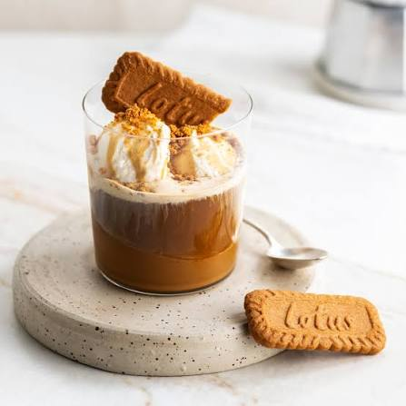
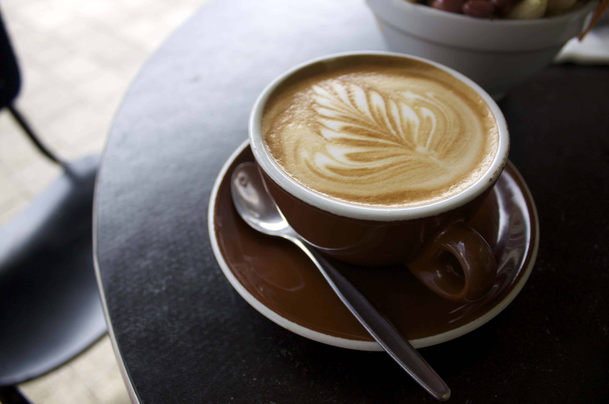
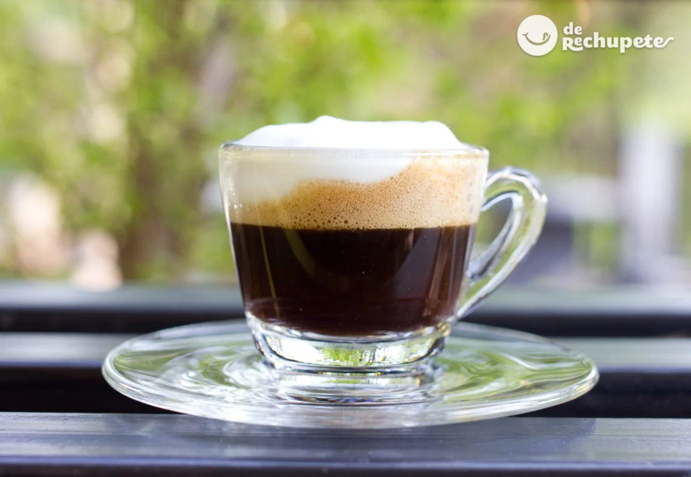
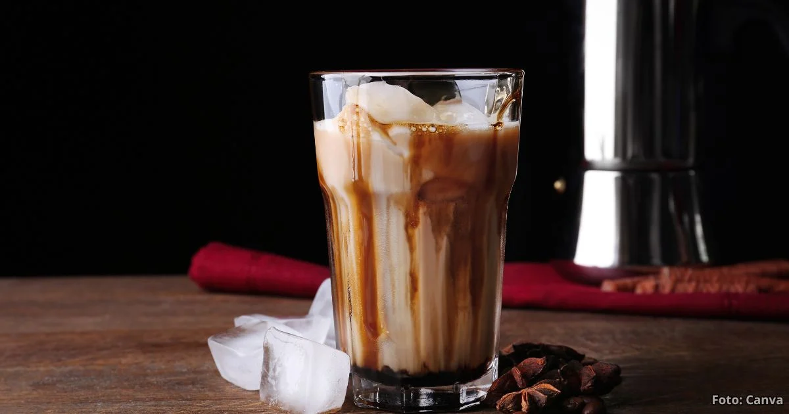
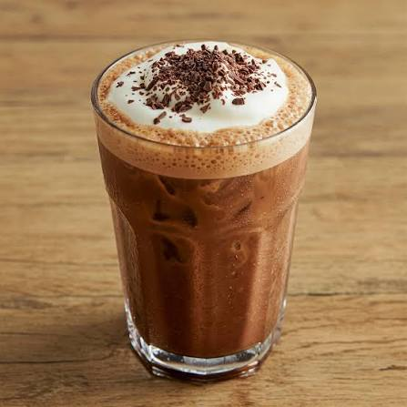
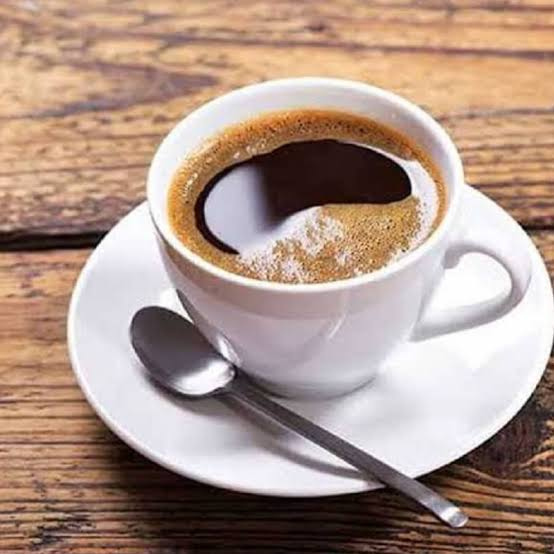
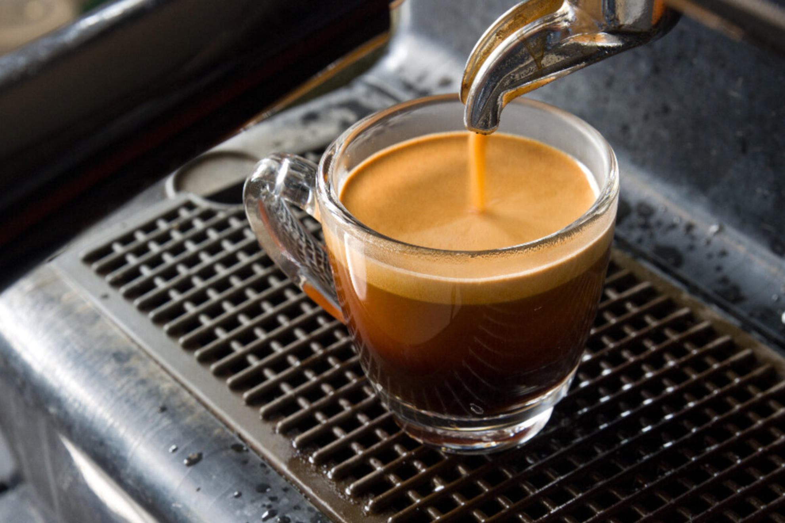
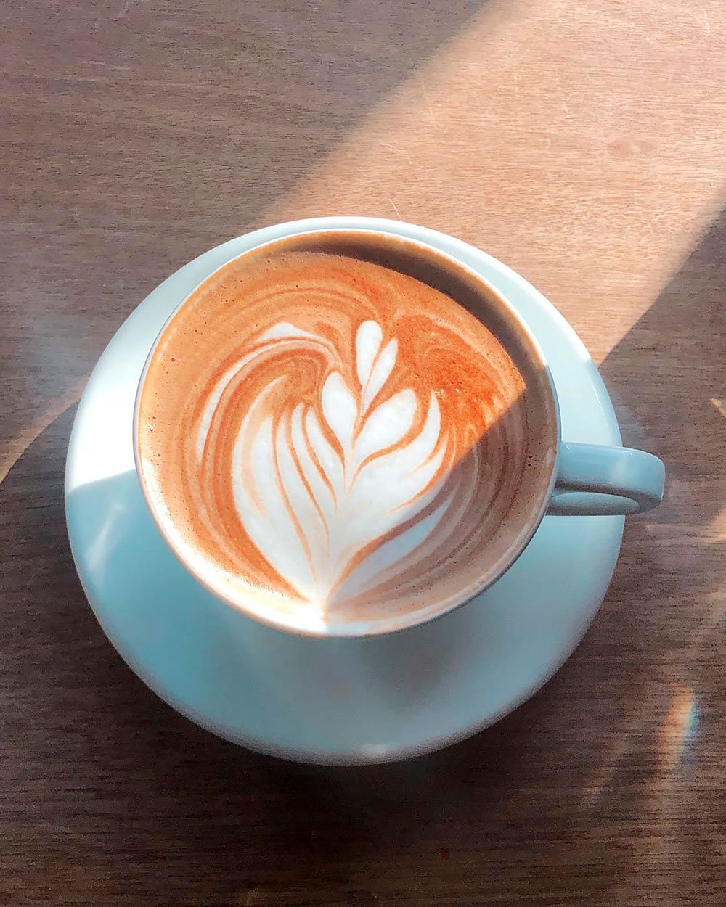
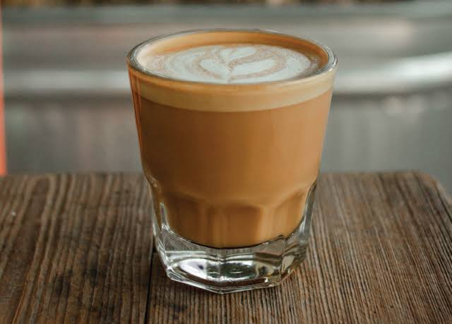

affogato
Delicioso postre italiano preparado con una bola de helado de vainilla bañada con un espresso caliente, ofreciendo una combinación perfecta entre lo frío, lo cremoso y el intenso sabor del café
⭐⭐⭐⭐⭐
$20.000

Flat-White
Bebida elaborada con un doble espresso y leche vaporizada con una fina capa de microespuma, logrando una textura cremosa y un equilibrio perfecto entre la intensidad del café y la suavidad de la leche.
⭐⭐⭐⭐⭐
$15.000

Machiatto
Bebida elaborada con un espresso "manchado" con una pequeña cantidad de leche vaporizada y una fina capa de espuma, ofreciendo un sabor intenso y equilibrado con un toque de suavidad.
⭐⭐⭐⭐⭐
$13.000

Latte-Dulce
Bebida elaborada con un espresso, leche vaporizada y un toque de jarabe dulce, coronada con una fina capa de espuma. Su textura cremosa y su sabor suave la convierten en una opción perfecta para disfrutar de un café con un delicado toque de dulzura.
⭐⭐⭐⭐⭐
$25.000

Latte-Frio
Bebida preparada con un espresso, leche fría y hielo, ofreciendo una combinación refrescante, cremosa y de sabor equilibrado. Es ideal para quienes desean disfrutar del auténtico sabor del café en una versión fría y suave, con la opción de añadir un toque de jarabe saborizado para realzar su dulzura.
⭐⭐⭐⭐⭐
$25.000

Mocha
Bebida elaborada con un espresso, leche vaporizada y chocolate, logrando una combinación perfecta entre el intenso sabor del café y la suavidad del chocolate. Se corona con una fina capa de espuma y, de forma opcional, crema batida para una experiencia aún más deliciosa.
⭐⭐⭐⭐⭐
$30.000

Mocha-Frio
Bebida preparada con un espresso, leche fría y hielo, ofreciendo una combinación refrescante, cremosa y de sabor equilibrado. Es ideal para quienes desean disfrutar del auténtico sabor del café en una versión fría y suave, con la opción de añadir un toque de jarabe saborizado para realzar su dulzura
⭐⭐⭐⭐⭐
$18.000

Americano
Bebida elaborada con un espresso y agua caliente, ofreciendo un sabor suave, equilibrado y un aroma intenso. Es una opción ideal para quienes disfrutan de un café ligero sin perder la esencia del espresso.
⭐⭐⭐⭐⭐
$10.000

espresso
Bebida elaborada con café finamente molido y agua caliente extraída a alta presión, ofreciendo un sabor intenso, un aroma concentrado y una delicada capa de crema en la superficie. Es la base de muchas bebidas de café y una excelente opción para quienes disfrutan del auténtico sabor del café.
⭐⭐⭐⭐⭐
$13.000

Capuchino
Bebida elaborada con un espresso, leche vaporizada y una generosa capa de espuma de leche, logrando una textura cremosa y un sabor equilibrado. Puede acompañarse con un toque de cacao o canela para realzar su aroma y presentación.
⭐⭐⭐⭐⭐
$20.000

cortado
Bebida elaborada con un espresso y una pequeña cantidad de leche vaporizada, logrando un equilibrio perfecto entre la intensidad del café y la suavidad de la leche. Es una opción ideal para quienes buscan un café con un sabor intenso, pero más suave que un espresso tradicional.
⭐⭐⭐⭐⭐
$15.600